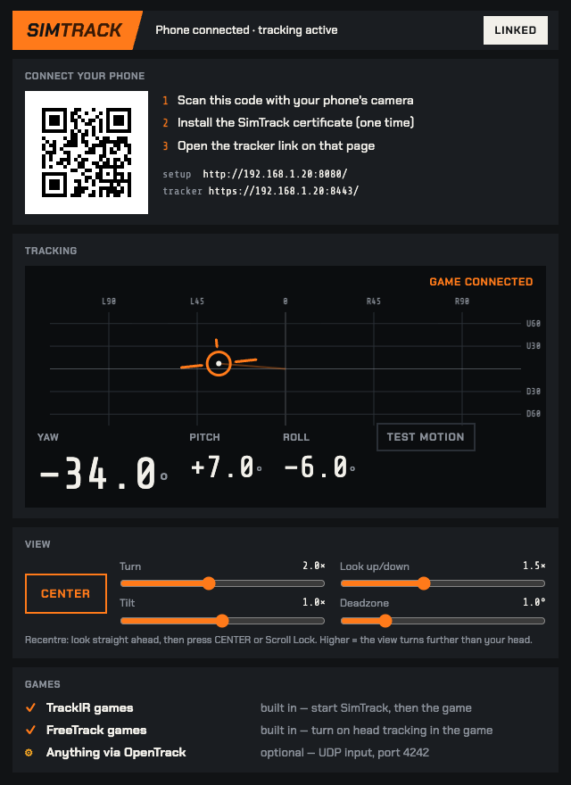
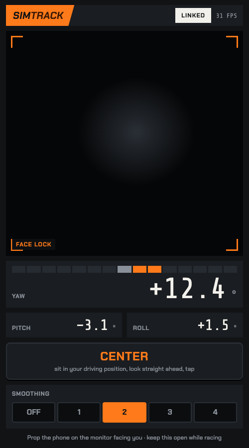

Turn your head. The cockpit turns with you.
SimTrack is head tracking for PC sims that runs on the phone you already own. Prop it on your monitor and look into the corner. No app, no webcam, no OpenTrack.
Check your mirrors by looking at them.
Turn on Quick look and the view swings onto the mirror once your head turns past 15°, so junctions don't take a full neck turn. Your truck settings stay separate from your car games.
Filled: verified with a real head. Outlined: reads TrackIR or FreeTrack, so it should work, not yet confirmed.
- No app
The tracker is a web page served by your own PC. Scan a QR code and it opens.
- No webcam
Your phone's front camera does the work, and its video never leaves the phone.
- No OpenTrack
SimTrack talks to the game directly as TrackIR or FreeTrack. Nothing in between to configure.
- No clip on your cap
Nothing to wear and nothing to charge. Sit down and drive.
- No subscription
€14.99 once, with every early-access update.
Two minutes from download to looking around
Face tracking runs in your phone's browser. Your PC hands the result to the game the same way TrackIR hardware does.
- 01
Start SimTrack on the PC
Unzip and double-click. A window opens with a QR code.
- 02
Scan the code with your phone
The setup page installs one small certificate so the camera works over your home network. Only the first time.
- 03
Prop the phone, start the game
Look straight ahead and tap Center. TrackIR games pick it up on their own.
Specs


- Tracks
- Turn, nod and tilt, measured against how you sit, so the phone's angle on the monitor doesn't skew the reading.Leaning (in and out, side to side, up and down) is newer and still being tested in games.
- Game output
- TrackIR and FreeTrack 2.0, built in. OpenTrack UDP on port 4242 if you already use it.
- Tuning
- Sensitivity per axis, a deadzone, and a five-position smoothing switch from raw to steady. Remembered per game and switched automatically when the game starts.
- Quick look
- Optional. Turn your head past 15° and the view swings onto the mirror or out of the side window. Made for trucking and flight sims.
- Your games
- Lists the supported games on your PC and what, if anything, each needs switched on.
- Recenter
- The Center button on the phone or the PC, Scroll Lock, or any button on your wheel or button box, mid-race.
- Test
- The PC window shows where the game is looking. Test Motion sweeps every axis without the phone, so you can check a game before you sit down.
- Privacy
- Video never leaves the phone. Tracking data stays on your WiFi. If the phone drops, the view returns to center.
- You need
- A Windows 10 or 11 PC and a phone from the last few years, on the same WiFi. 5 GHz WiFi is best.
Does it work with my game?
A game turns green only after someone has run it with SimTrack and a real head. Yellow means the game reads TrackIR or FreeTrack, so it should work, and nobody has confirmed it yet. If yours doesn't work, you get a refund.
| Game | Status | Reads | Notes |
|---|---|---|---|
| Assetto Corsa | VERIFIED | TrackIR | Nothing to switch on. Run with a real head, October 2026. |
| Euro Truck Simulator 2 | VERIFIED | FreeTrack | Turn on head tracking in the game's controls. November 2026. |
| iRacing | EXPECTED | TrackIR | |
| Assetto Corsa Competizione | EXPECTED | TrackIR | |
| Le Mans Ultimate | EXPECTED | TrackIR | |
| rFactor 2 | EXPECTED | TrackIR | |
| RaceRoom | EXPECTED | TrackIR | |
| DiRT Rally 2.0 | EXPECTED | TrackIR | |
| American Truck Simulator | EXPECTED | FreeTrack | Turn on head tracking in the game's controls. |
| BeamNG.drive | EXPECTED | FreeTrack | Turn on head tracking in the game's controls. |
| MS Flight Simulator | EXPECTED | TrackIR | |
| DCS World | EXPECTED | TrackIR | |
| X-Plane | EXPECTED | TrackIR | |
| IL-2 Great Battles | EXPECTED | TrackIR | |
| Elite Dangerous | EXPECTED | TrackIR | |
| Star Citizen | EXPECTED | TrackIR | Has anti-cheat, which may block it. Not tested yet. |
| Automobilista 2 | VR MODE ONLY | TrackIR | Reads head tracking only in its SteamVR mode with the helmet camera, the same as with real TrackIR. Still testing. |
| War Thunder | BLOCKED | TrackIR | Its anti-cheat (BattlEye) blocks SimTrack for now. |
Compared
Every option works. They differ in what you buy, what you install and how long setup takes.
| SimTrack | TrackIR 5 | Webcam + OpenTrack | Phone tracking apps | |
|---|---|---|---|---|
| Price | €14.99 once | around €150 or more | free | varies |
| Hardware | the phone you own | IR camera and a clip on your headset or cap | a webcam | the phone you own |
| On the phone | nothing, it's a web page | n/a | n/a | an app |
| On the PC | SimTrack only | TrackIR software | OpenTrack, plus tracker and curve setup | a PC app, some also need OpenTrack |
| Games | TrackIR and FreeTrack titles | TrackIR titles | TrackIR and FreeTrack titles | depends on the app |
| Where it's stronger | price, setup in minutes, built-in test and wheel-button recenter | precision and mature game profiles | costs nothing | some are on Steam |
TrackIR is a trademark of NaturalPoint, Inc. SimTrack is not affiliated with NaturalPoint. Prices checked November 2026 from retail listings and vary by store.
Price
Pay once. No subscription. Your first 5 racing days are free, and a day only counts when the phone actually tracked. The founder's price ends when early access does.
- SimTrack for Windows
- 5 racing days free first
- Every early-access update
- One key, up to 2 PCs
- Works in your game or your money back, 14 days
- Licence key by email
Checkout by Lemon Squeezy, our reseller. VAT included where it applies.
SimTrack is made by one person, Paulius Mielkaitis, in Lithuania, and tested on my own sim rig. It's early access: it works in Assetto Corsa and Euro Truck Simulator 2 today, and I add games to the list as buyers confirm them. Questions and bug reports come straight to me.
Paulius · support@getsimtrack.com
Questions
Do I need an app on my phone?
No. It's a web page served by your own PC. You install one small certificate once so the camera is allowed, then it's a bookmark you can add to your home screen.
Why pay when OpenTrack and a webcam are free?
If you have a webcam and like tuning OpenTrack, that's a good free option. SimTrack is for people who'd rather scan a QR code: no webcam, no OpenTrack setup, a few sliders instead of curves, and a test button to check each game. If it isn't worth it to you, the 14-day refund covers you.
How is this different from head-tracking phone apps?
There's nothing to install on the phone, because it runs in the browser. On the PC, SimTrack is what the game talks to directly as TrackIR or FreeTrack, so there's no OpenTrack in between.
Does it track leaning?
Version 0.2 adds leaning in and out, side to side and up and down. It's new and still being tested in games, so treat it as a bonus for now. Turn, nod and tilt are the tested part.
Why does it ask me to install a certificate?
Phone browsers only allow the camera on secure links. SimTrack creates its own secure link to your PC, and nothing goes through the internet. Installing the certificate tells your phone to trust your own PC. Its private key is created on your PC and never leaves it, and you can remove the certificate from your phone's settings at any time. The setup page walks you through it on iPhone and Android.
Does the camera video go anywhere?
No. Face tracking runs on the phone, and only the head position travels over your WiFi to your PC. The only thing that goes online is a version check at startup and a licence check every few days. Details are in the privacy policy.
Will it work with my game?
It works with games that support TrackIR or FreeTrack head tracking, which covers most PC racing, flight, driving and space sims. See the list above. If yours doesn't work, ask for a refund within 14 days.
How does it compare to TrackIR?
TrackIR is dedicated infrared hardware and it's excellent. SimTrack uses a phone camera. It handles mirrors, corners and traffic well. It isn't a €150 infrared sensor and doesn't claim to be.
Is there lag?
A little, because it's a camera over WiFi. A 5 GHz network and a phone from the last few years keep it comfortable. Set the smoothing switch lower for a quicker response, higher for a steadier view.
Windows warns me about the download
Early-access builds may not be code-signed yet. Click More info, then Run anyway. Also click Allow on the firewall prompt, or your phone can't reach the PC.
Mac, console or VR?
Windows PC only. Consoles can't take head-tracking input, and VR headsets track your head themselves.
Does it drain the phone?
Yes. Camera plus face tracking is heavy, so plug it in for long sessions. SimTrack keeps the screen awake by itself.
Can I use it on two PCs?
Yes, one key works on up to 2 PCs at a time. To move it to a third, deactivate it on one of the others from the app.
The view moves the wrong way
That's a one-line fix: a config.json next to SimTrack.exe with {"invert_yaw": true} (or pitch, or roll). Ask on Discord and we'll sort it out.
How do refunds work?
14 days, any reason. Reply to your receipt email. If it didn't work in your game, tell us which one so the list stays accurate.
Stuck? The help page covers connecting, the certificate, games that don't move, and updating.
Old phone in a drawer? Give it a job.
Get SimTrack